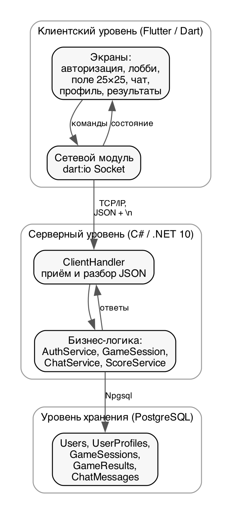

Описание программы
1 ОБЩИЕ СВЕДЕНИЯ
1.1. Наименование программы
Наименование программы: программный комплекс «Крестики и нолики». Обозначение: ПК-КН.01. Версия 1.0. Документ оформлен в соответствии с требованиями ГОСТ 19.402-78 «Описание программы».
1.2. Необходимое программное обеспечение
Программный комплекс состоит из серверной части на языке C# с использованием платформы .NET 10, клиентской части на Flutter (Dart) и базы данных PostgreSQL. Сервер и база данных запускаются в Docker-контейнерах; клиент работает как release-сборка Windows или веб-сборка.
1.3. Языки программирования
Серверная часть реализована на C# (.NET 10), клиентская — на Dart (Flutter). Запросы к базе данных написаны на SQL и выполняются через провайдер Npgsql. Обмен между клиентом и сервером — JSON поверх TCP/IP.
1.4. Сведения о разработчике и об эксплуатации
Разработчик: Бызов К. Д., студент группы 9/3 – РПО 24/2. Дата выпуска документа: 11 ноября 2026 г. Программа эксплуатируется в локальной сети учебного класса или небольшой организации; серверная часть размещается на компьютере с Docker, клиенты — на рабочих станциях Windows 10/11.
2 ФУНКЦИОНАЛЬНОЕ НАЗНАЧЕНИЕ
2.1. Назначение программы
Программа предназначена для организации сетевой игры «Крестики и нолики» между двумя пользователями на поле 25 × 25 с условием победы «пять в ряд». Дополнительно реализуются авторизация, профиль игрока, создание игровых сессий и подключение по идентификатору, чат с фильтрацией нецензурных слов, автоматический подсчёт баллов и итоговый счёт.
2.2. Классы решаемых задач
Программа решает следующие задачи:
а) авторизация пользователей и защита учётных записей;
б) создание и редактирование профиля игрока;
в) создание игровой сессии и подключение второго игрока по идентификатору;
г) отображение поля 25 × 25 и выполнение ходов;
д) проверка допустимости хода: очередь, диапазон 0–24, свободная клетка;
е) определение победы по пяти символам в ряд и ничьей;
ж) синхронизация состояния поля между клиентами в режиме реального времени;
з) чат двух игроков с серверной фильтрацией нецензурной лексики;
и) автоматический подсчёт баллов (3 за победу, 1 за ничью, 0 за поражение);
к) хранение профилей, результатов и истории сообщений в PostgreSQL.
2.3. Функциональные ограничения
В одной сессии участвуют не более двух игроков. Мини-игра выбора первого хода, список друзей и социальные функции в текущую версию не входят. Соединение не защищено TLS и рассчитано на доверенную локальную сеть. Автоматическое переподключение к начатой партии и восстановление сессий после аварийного завершения сервера не поддерживаются.
2.4. Условия применения
Область применения — учебные и локальные сети, персональные компьютеры под управлением Windows 10/11. Сервер работает в Linux-контейнере Docker; на Windows используется Docker Desktop с Linux-контейнерами. Для работы через Интернет требуется дополнительная настройка межсетевого экрана и защита соединения, что не входит в текущий объём.
3 ОПИСАНИЕ ЛОГИЧЕСКОЙ СТРУКТУРЫ
3.1. Общий алгоритм функционирования
Программа построена по клиент-серверной архитектуре. Сервер является единственным источником истины: он хранит состояние поля, проверяет ходы и определяет результат. Клиент отправляет команды и отображает подтверждённое сервером состояние.
Порядок взаимодействия:
-
Клиент устанавливает TCP-соединение с сервером.
-
Отправляет сообщение auth и получает профиль.
-
Создаёт сессию или подключается к существующей по sessionId.
-
После подключения второго игрока сервер инициализирует поле 25 × 25.
-
Клиенты по очереди отправляют move; сервер проверяет ход.
-
После каждого хода сервер рассылает state обоим участникам.
-
При завершении партии отправляется result и обновляется статистика.
-
Клиенты отображают итог и возвращаются в лобби.
3.2. Используемые методы
Обмен выполняется по протоколу TCP/IP сообщениями JSON, разделёнными символом конца строки. На сервере применяются асинхронные методы System.Net.Sockets и async/await; обработка команд одной сессии сериализуется через CommandLock. Проверка победы выполняется только вокруг последнего хода по четырём направлениям. Фильтрация чата выполняется на сервере регистронезависимо, с учётом похожих символов и разделителей.
3.3. Структура программы
Логическая структура включает три уровня: представления (Flutter), бизнес-логики (C# / .NET 10) и хранения данных (PostgreSQL).
Схема приведена на рисунке 1.

Рисунок 1 — Архитектура программного комплекса
3.4. Функции составных частей
Состав основных модулей приведён в таблице 1.
Таблица 1 — Состав модулей программного комплекса
| Модуль | Технология | Назначение |
|---|---|---|
| Client UI | Flutter / Dart | Экраны авторизации, лобби, игрового поля 25 × 25, чата, профиля и результатов; обработка ввода пользователя. |
| GameClient | Flutter / Dart | Установка TCP-соединения, отправка JSON-команд, приём и разбор состояния, буферизация по символу «\n». |
| ClientHandler | C# / .NET 10 | Приём подключения, чтение JSON, вызов GameServer.HandleMessageAsync и отправка ответа. |
| AuthService | C# / .NET 10 | Проверка логина и пароля; хеширование выполняет PasswordHasher, привязка соединения — GameServer. |
| GameSession | C# / .NET 10 | Управление партией: участники, очередь, статус, обработка хода, проверка победы и ничьей. |
| GameBoard | C# / .NET 10 | Хранение поля 25 × 25, проверка свободной клетки, установка символа, проверка заполненности. |
| ChatService | C# / .NET 10 | Фильтрация текста: регистронезависимый поиск, учёт похожих символов и разделителей, замена запрещённых выражений на «***». |
| ScoreService | C# / .NET 10 | Расчёт баллов: 3 за победу, 1 за ничью, 0 за поражение. |
| DbRepository | Npgsql / PostgreSQL | Параметризованные запросы, транзакции, обновление статистики, чтение и запись профилей, сессий, результатов и сообщений. |
3.5. Связи между компонентами
Основные типы сообщений приведены в таблице 2.
Таблица 2 — Основные типы сообщений
| Тип | Направление | Основные поля | Назначение |
|---|---|---|---|
| auth | клиент → сервер | login, password | Авторизация |
| auth_ok | сервер → клиент | userId, login, nickname, profile | Подтверждение входа |
| profile_get | клиент → сервер | — | Запрос профиля текущего пользователя |
| profile_update | клиент → сервер | nickname | Изменение профиля |
| profile | сервер → клиент | nickname, gamesPlayed, wins, losses, totalScore | Профиль игрока |
| session_create | клиент → сервер | — | Создание игровой сессии |
| session_created | сервер → клиент | sessionId, symbol, status | Сессия создана |
| session_join | клиент → сервер | sessionId | Подключение к сессии |
| session_started | сервер → клиент | sessionId, symbol, board, turn, players | Партия началась |
| move | клиент → сервер | row, column (sessionId — из соединения) | Выполнение хода |
| state | сервер → клиент | sessionId, board, turn, status, winner | Состояние поля |
| chat | клиент → сервер | sessionId, text | Отправка сообщения |
| chat | сервер → клиент | sessionId, senderId, sender, text, at | Сообщение чата |
| result | сервер → клиент | sessionId, winner, winnerId, scoreX, scoreO, draw | Итог партии |
| leave | клиент → сервер | — | Выход из сессии |
| opponent_left | сервер → клиент | message | Соперник вышел |
| left | сервер → клиент | — | Выход подтверждён |
| ping / pong | клиент ↔ сервер | — | Проверка соединения |
| error | сервер → клиент | code, message | Описание ошибки |
3.6. Связи с другими программами
Сервер использует PostgreSQL через Npgsql и не имеет прямого доступа к клиентским файлам. Docker Compose связывает контейнеры server и db в отдельную сеть; наружу публикуется только порт 5000. Клиент не требует установленного Flutter SDK в release-сборке. Взаимодействие с ОС ограничивается сетевыми сокетами, файлами журналов и томом pgdata.
3.7. Обработка ошибок
Основные сообщения об ошибках приведены в таблице 3. При ошибке состояние поля не изменяется, клиент получает код и текстовое описание.
Таблица 3 — Сообщения об ошибках
| Код | Сообщение | Действие пользователя |
|---|---|---|
| AUTH-00 | Сначала авторизуйтесь | Выполнить вход |
| AUTH-01 | Неверный логин или пароль | Проверить данные и повторить вход |
| AUTH-02 | Заполните логин и пароль | Заполнить оба поля |
| AUTH-03 | Пользователь уже в сети | Завершить другой сеанс |
| AUTH-04 | Вы уже авторизованы | Продолжить работу |
| AUTH-05 | Слишком много попыток | Подождать и повторить вход |
| SES-00 | Не удалось создать/подключить сессию | Повторить попытку |
| SES-01 | Сессия не найдена | Проверить идентификатор сессии |
| SES-02 | Сессия уже заполнена | Создать новую сессию |
| SES-03 | Нельзя подключиться к своей сессии | Создать новую сессию |
| SES-04 | Вы уже находитесь в игровой сессии | Выйти из текущей сессии |
| GAME-00 | Ошибка хода | Повторить ход |
| GAME-01 | Сейчас ход другого игрока | Дождаться своей очереди |
| GAME-02 | Клетка уже занята | Выбрать свободную клетку |
| GAME-03 | Координаты вне диапазона | Выбрать клетку от 0 до 24 |
| GAME-04 | Партия не найдена или не активна | Начать новую партию |
| GAME-05 | Вы не участник сессии | Войти в свою сессию |
| CHAT-01 | Пустое сообщение | Ввести текст |
| CHAT-02 | Сообщение слишком длинное | Сократить текст до 500 символов |
| CHAT-03 | Вы не находитесь в игровой сессии | Войти в сессию |
| PROFILE-01 | Никнейм должен быть от 1 до 64 символов | Исправить никнейм |
| PROTO-01 | Некорректный JSON | Проверить формат сообщения |
| PROTO-02 | Слишком длинное сообщение | Сократить пакет |
4 ИСПОЛЬЗУЕМЫЕ ТЕХНИЧЕСКИЕ СРЕДСТВА
Серверный компьютер: процессор с частотой не менее 2 ГГц, оперативная память не менее 4 ГБ, свободное место на диске не менее 3 ГБ для образов Docker, базы данных и резервных копий, сетевой адаптер. Клиентские компьютеры: Windows 10/11, процессор 1,5 ГГц, ОЗУ 2 ГБ, свободное место 50 МБ, сетевой адаптер. Сеть: TCP/IP, локальная сеть с пропускной способностью не менее 100 Мбит/с.
Программное обеспечение: Docker Engine 24+ и Docker Compose v2; контейнер server с .NET 10 Runtime; контейнер db с PostgreSQL 15+; клиентское приложение Flutter (сборка для Windows).
5 ВЫЗОВ И ЗАГРУЗКА
5.1. Способ вызова программы
Запуск серверной части и PostgreSQL в Docker:
docker compose up -d --build
Запуск клиентской части:
ttt_client.exe
5.2. Входные точки в программу
Серверная входная точка — метод Main в Program.cs: он читает конфигурацию, инициализирует базу данных и запускает TcpListener на порту 5000. Клиентская входная точка — функция main() в main.dart, создающая MaterialApp и экран авторизации.
5.3. Порядок загрузки и завершения работы
Docker Compose поднимает контейнеры server и db. Схема базы данных создаётся автоматически при первом запуске, тестовые учётные записи — если их ещё нет. Клиент запрашивает адрес сервера и порт (по умолчанию localhost:5000), после чего открывает экран авторизации. Остановка контейнера server завершает активные сессии; результаты незавершённых партий не сохраняются.
5.4. Резервное копирование
Резервная копия базы данных создаётся командой:
docker compose exec -T db pg_dump -U ttt -d ttt -F c > backup.dump
Восстановление выполняется командой pg_restore. Копии хранятся вне тома pgdata; перед обновлением версии создаётся дополнительная копия.
6 ВХОДНЫЕ ДАННЫЕ
6.1. Характер и организация входных данных
Входные данные поступают от пользователя через клиентский интерфейс и передаются на сервер JSON-сообщениями. К ним относятся учётные данные, команды управления сессией, координаты клетки и текст сообщения чата.
6.2. Предварительная подготовка
До начала работы администратор запускает Docker Compose, проверяет healthcheck контейнеров и при необходимости создаёт учётные записи. Пользователь получает логин и пароль, запускает клиент и указывает адрес сервера и порт.
6.3. Форматы и описание входных данных
Входные данные программы приведены в таблице 4.
Таблица 4 — Входные данные
| Данные | Описание |
|---|---|
| Логин и пароль | Учётные данные для авторизации |
| Данные профиля | Никнейм и изменяемые сведения профиля |
| Идентификатор сессии | Номер игровой комнаты для подключения |
| Координаты клетки | Row и Column в диапазоне 0–24 |
| Текст сообщения | Сообщение чата длиной до 500 символов |
| Команды управления | Создать сессию, подключиться, выйти из игры |
Пример запроса хода:
{"type":"move","sessionId":17,"row":12,"column":5}
7 ВЫХОДНЫЕ ДАННЫЕ
7.1. Характер и организация выходных данных
Выходные данные формируются сервером и передаются клиентам в виде JSON-сообщений: состояние поля, очередь хода, результат, сообщения чата и коды ошибок. Клиент не изменяет состояние самостоятельно.
7.2. Форматы и описание выходных данных
Выходные данные программы приведены в таблице 5.
Таблица 5 — Выходные данные
| Данные | Описание |
|---|---|
| Состояние поля | Матрица 25 × 25 с символами X, O и пустыми клетками |
| Очередь хода | 1 — X, 2 — O |
| Статус партии | waiting, active, finished, cancelled |
| Результат | winner, winnerId, draw |
| Баллы партии | scoreX и scoreO |
| Статистика профиля | gamesPlayed, wins, losses, totalScore |
| Сообщения чата | Отфильтрованный текст сообщений |
| Сообщения об ошибках | Код и описание ошибки |
Пример подтверждённого состояния:
{"type":"state","sessionId":17,"turn":2,
"status":"active","winner":null}
Поле board в примере опущено: это массив из 25 строк по 25 целых чисел (0 — свободно, 1 — X, 2 — O). При обрыве соединения клиент показывает сообщение локально и возвращается на экран авторизации; автоматическое переподключение к начатой партии не выполняется.
ПРИЛОЖЕНИЕ А (справочное). Пример форматов данных
Пример сообщения авторизации, передаваемого клиентом серверу:
{"type":"login","login":"player1","password":"secret"}
Пример создания игровой сессии:
{"type":"create_session"}
Пример подключения второго игрока:
{"type":"join_session","sessionId":1042}
Пример сообщения о ходе игрока:
{"type":"move","sessionId":1042,"row":12,"column":7}
Пример сообщения чата:
{"type":"chat","sessionId":1042,"text":"Хорошая партия"}
Пример сообщения сервера с обновлением состояния поля:
{"type":"state","sessionId":1042,"turn":1,
"status":"active","winner":null,
"board":"..."}
Поле board в примере сокращено: это массив из 25 строк по 25 целых чисел (0 — свободная клетка, 1 — X, 2 — O).
ПРИЛОЖЕНИЕ Б (справочное). Контрольный пример работы
Контрольная партия проводится на поле 25 × 25. Игрок X начинает партию и выигрывает пятью символами подряд по горизонтали. Координаты клеток указаны в формате «строка, столбец», нумерация с нуля. Последовательность ходов приведена в таблице 6.
Таблица 6 — Контрольный пример партии
| Ход | Игрок | Клетка (строка, столбец) | Комментарий |
|---|---|---|---|
| 1 | X | 12, 0 | Начало партии |
| 2 | O | 0, 0 | Ответный ход |
| 3 | X | 12, 1 | Второй символ X |
| 4 | O | 0, 1 | Ответный ход |
| 5 | X | 12, 2 | Третий символ X |
| 6 | O | 0, 2 | Ответный ход |
| 7 | X | 12, 3 | Четвёртый символ X |
| 8 | O | 0, 3 | Ответный ход |
| 9 | X | 12, 4 | Пятый символ X, победа |
После девятого хода сервер фиксирует победу игрока X, начисляет 3 балла победителю и 0 баллов сопернику, записывает результат в PostgreSQL и рассылает обоим клиентам сообщение result.